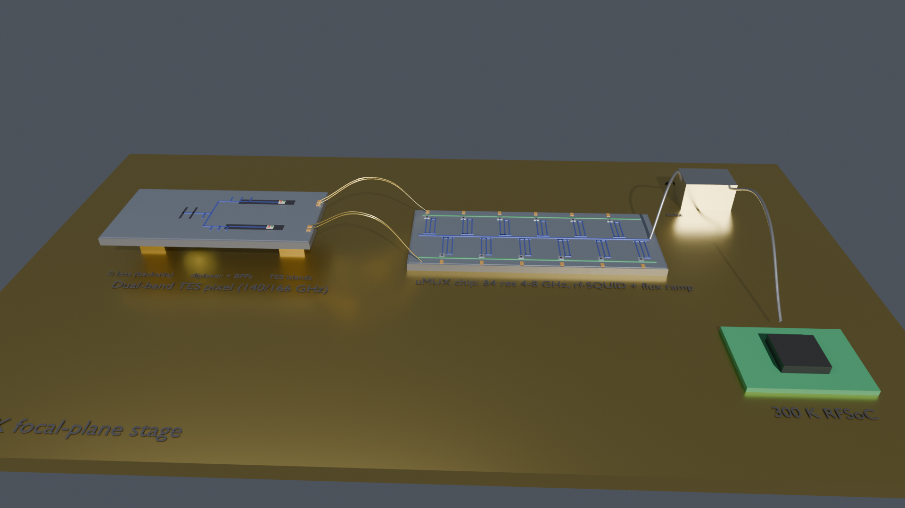
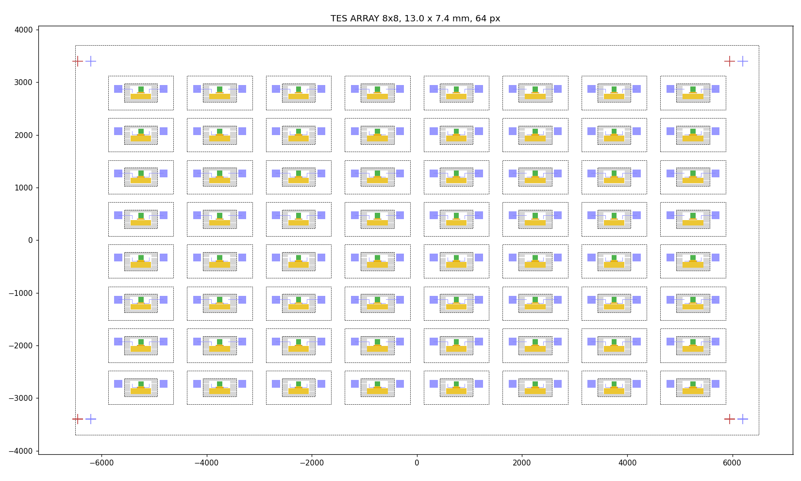
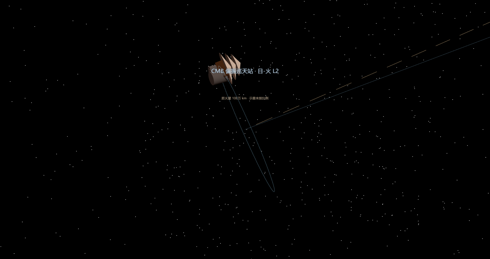
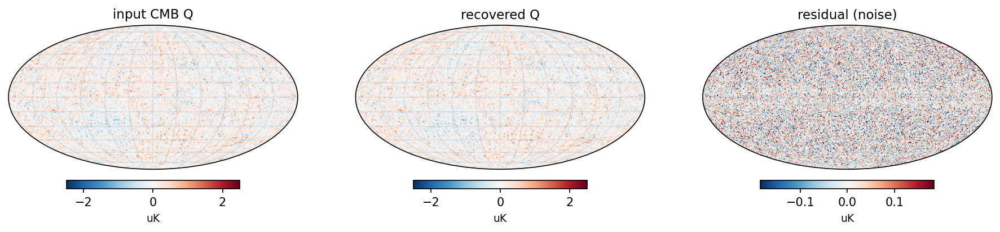
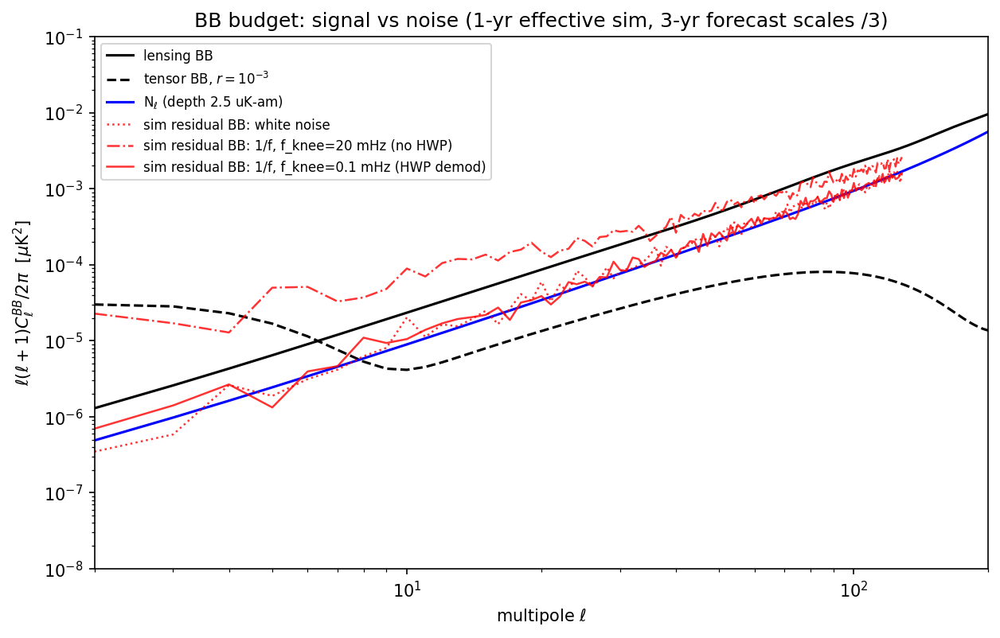

探测器 3D 建模:MFT 140/166 GHz 双色 TES 像素 · 悬空岛微桥 + 片上滤波

自研流片版图:TES 阵列(gdstk 掩模,含 µMUX 读出)

引擎内:L2 晕轨道上的巡天站(轨道视角 ?view=cmb)

巡天仿真:Stokes Q 偏振天图(扫描航迹 → 命中图 → 成图管线)

B 模功率谱预测——这台望远镜为之而生的那条曲线
🔥 热学 FEMCOMSOL 无头批求解 ~22 次:悬空岛非线性热闭环 → 6 器件热学基线(150 µm 腿长定 G/P_sat)
📐 全波电磁HFSS ~48 次:天线方向图 · 片上滤波器 · 带外抑制联合曲线——全链 ~70 落库求解
读出µMUX 64 通道微波复用 · SQUID 单元版图 · 见证片校准结构
📐 巡天链扫描航迹 → 交叉链接命中图 → T/Q/U 成图 → 前景分量分离 → B 模谱预测(19 张管线图)
📐 选址L2 而非火星轨道:单侧遮阳 · 热稳定 · 避开行星微波前景——三者近火轨道都不成立
城内轨道视角拉近 L2 即弹知识卡 · 晕轨道动画 · ?view=cmb 直达